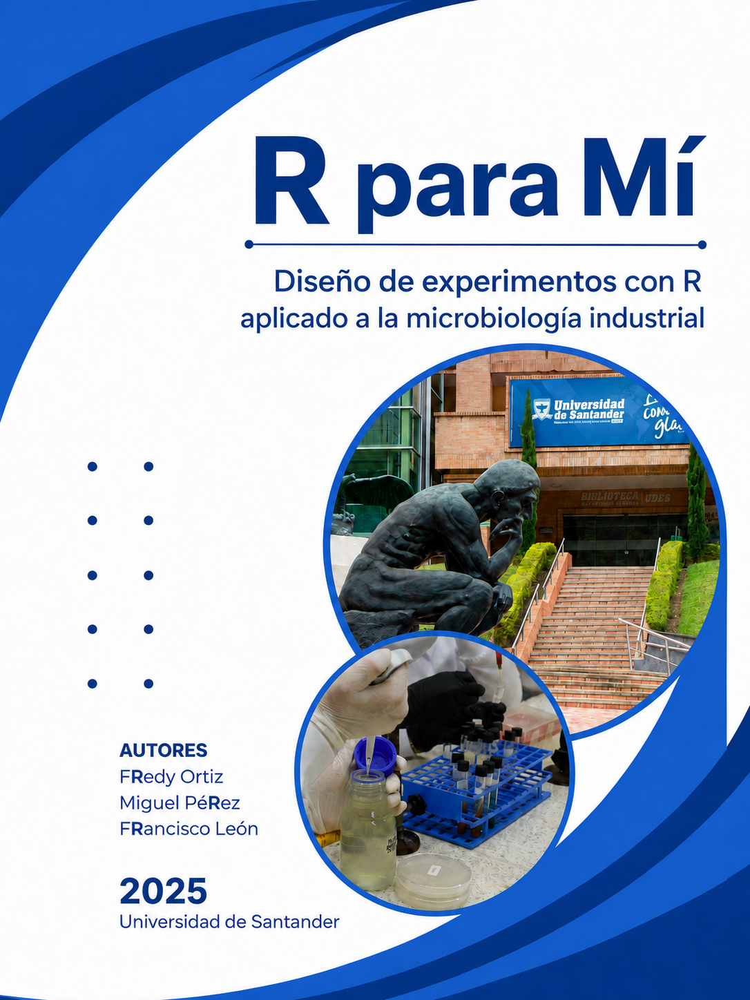

Prefacio
Diseño de experimentos con R aplicado a la microbiología industrial
R para Mí

Diseño de experimentos con R aplicado a la microbiología industrial
R para Mí es un recurso educativo digital para aprender diseño de experimentos a partir de problemas y datos vinculados con la microbiología industrial. Su propósito es conectar tres dimensiones que con frecuencia se enseñan por separado: el problema experimental, el razonamiento estadístico y el análisis reproducible con R.
A diferencia de un manual genérico de estadística, los ejemplos del libro se construyen alrededor de situaciones disciplinares y materiales derivados de trabajos de grado y proyectos académicos desarrollados en la Universidad de Santander (UDES). Entre los casos se incluyen experimentos con Penicillium sp., tratamientos de fertilización en Phaseolus vulgaris y otros problemas propios de la investigación microbiológica y biotecnológica.
El aprendizaje sigue una secuencia aplicada:
problema microbiológico → diseño experimental → datos → código R → análisis → interpretación científica
El código no se presenta como un fin en sí mismo, sino como una herramienta para documentar, reproducir y comunicar decisiones experimentales.
¿Qué encontrará en este libro?
El recurso integra:
- introducción progresiva al uso de R y RStudio;
- análisis bibliométrico como apoyo para formular y contextualizar problemas experimentales;
- fundamentos del diseño experimental;
- Diseño Completamente al Azar (DCA) con un caso aplicado a producción conidial;
- Diseño en Bloques Completos al Azar (DBCA) con un caso aplicado a fertilización y crecimiento vegetal;
- análisis de varianza, diagnóstico de supuestos, comparaciones múltiples y visualización de resultados;
- uso responsable de herramientas de inteligencia artificial para la simulación y exploración de escenarios;
- datos, código y resultados organizados para favorecer la reproducibilidad.
Una experiencia construida con R, Quarto y GitHub
El libro se desarrolla con R y Quarto y se publica mediante GitHub Pages. El flujo de trabajo permite mantener en un mismo proyecto el texto, el código, los datos, las figuras y los resultados, facilitando la actualización del material y la revisión pública de su código fuente.
Para conocer el proceso técnico y pedagógico de construcción, consulte Cómo se construyó este recurso.
Uso educativo y evidencia disponible
En la postulación presentada a LatinR 2026 se reportó el uso del recurso como material complementario en clases de la Maestría en Biotecnología de la Universidad de Santander (UDES). En esta versión del sitio se diferencia explícitamente entre el uso reportado y la evidencia sistemática disponible.
No se presentan porcentajes de satisfacción, efectos sobre el aprendizaje ni afirmaciones de “alta aceptación” porque, hasta el momento, no se dispone de una evaluación formal documentada que permita sustentar esas conclusiones. La siguiente fase contempla documentar de manera sistemática la implementación, la percepción de los participantes y la utilidad del material para reproducir y adaptar análisis experimentales.
Consulte Experiencia de uso y evaluación.
Datos y material experimental
Los conjuntos de datos y las imágenes que ilustran los capítulos provienen de experiencias académicas desarrolladas en la UDES. Se reconocen de manera explícita las contribuciones que dieron origen a los casos aplicados:
- Juan Sebastián Mejía Sarmiento — datos y registro fotográfico asociados a experimentos de producción conidial y ensayos microbiológicos, reproducidos con autorización del autor.
- Christian Andrey Chacín Zambrano — datos y registro fotográfico del experimento con Phaseolus vulgaris utilizado para el caso de Diseño en Bloques Completos al Azar (DBCA), reproducidos con autorización del autor.
La atribución específica de cada figura y conjunto de datos debe mantenerse en el capítulo correspondiente.
Participar y contribuir
El proyecto está concebido como un material educativo en evolución. Las personas interesadas pueden reportar errores, proponer mejoras pedagógicas, sugerir nuevos casos experimentales o aportar código y documentación mediante GitHub.
Consulte Cómo contribuir y el archivo CONTRIBUTING.md del repositorio.
Autores
Fredy Alejandro Ortiz Meneses
Microbiología General y Microbiología II
Miguel Oswaldo Pérez Pulido
Proyecto II – Microbiología Industrial
Maestría en Estadística Aplicada y Analítica de Datos
Francisco Javier León
Proyecto I – Microbiología Industrial
Maestría en Estadística Aplicada y Analítica de Datos
Para citar
Ortiz, F. A., Pérez, M. O., y León, F. J. (2025). R para microbiología industrial: análisis de datos y diseño experimental con un enfoque práctico. Universidad de Santander, Vicerrectoría de Enseñanza. https://udesanalitica.github.io/r-para-mi/
@book{OrtizPerezLeon2025,
author = {Ortiz Meneses, Fredy Alejandro and Pérez Pulido, Miguel Oswaldo and León, Francisco Javier},
title = {R para microbiología industrial: análisis de datos y diseño experimental con un enfoque práctico},
publisher = {Universidad de Santander (UDES)},
address = {Bucaramanga, Colombia},
year = {2025},
note = {Vicerrectoría de Enseñanza},
url = {https://udesanalitica.github.io/r-para-mi/}
}Información editorial y derechos
© 2025 Universidad de Santander (UDES), titular de los derechos patrimoniales de la obra.
Autores: Fredy Alejandro Ortiz Meneses, Miguel Oswaldo Pérez Pulido y Francisco Javier León.
Estado del licenciamiento. El recurso es de acceso gratuito. La formalización de una licencia abierta para la reutilización del contenido se encuentra en trámite institucional. Se proyecta utilizar CC BY-SA 4.0 para el texto y las figuras propias y MIT para el código fuente. Mientras este proceso no haya concluido, la reutilización y adaptación del contenido debe sujetarse a la autorización correspondiente de la Universidad de Santander.
Universidad de Santander (UDES)
Calle 70 N.º 55-210
Bucaramanga, Santander, Colombia
https://www.udes.edu.co/